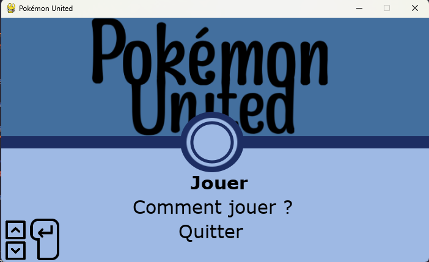

SAE Site web
Etudiant en BUT Informatique, je suis sujet à plusieurs projets en autonomie nommés SAE.
Dans le cadre d'une de ces SAE, des collègues et moi avons réalisé un site web composé de différents modules mathématiques ou cryptographiques par exemple.
Dans ce cadre, j'étais principalement chargé de la documentation et de la recherche d'informations pour la réalisation des différents modules, mais j'étais également chargé de l'optimisation et de la correction de certains processus.
Le site étant toujours en cours, je considère qu'il est visuellement et fonctionnellement réussi. Nous avons répondu à toutes les exigences fonctionnelles de nos professeurs.

Simulateur de combats "Pokémon"
Au cours de mon année de terminale au lycée, notre professeur de NSI nous donnais parfois des projets à réaliser en fonction des compétences apprises récemment.
Dans le cadre de l'un de ces projets, un ami et moi avons décidé de réaliser un simulateur de combats sur python, en utilisant la librairie pygame et une base de données SQLite.
Tandis que mon ami était chargé de la réalisation des sprites (images) et de la base de données, j'étais chargé du fonctionnement de l'application, m'occupant du système de combat, d'avantages, etc.
Ce projet, étant l'un de mes premiers projets, n'est pas complet d'un point de vue fidélité, mais notre professeur a été impressionné par la qualité de notre travail et notre rigueur.